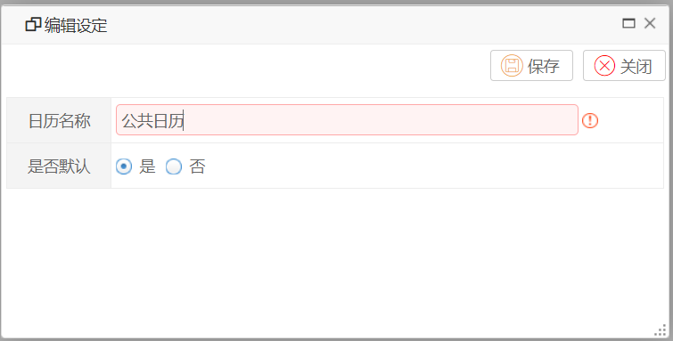
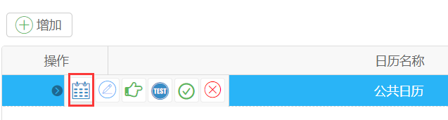
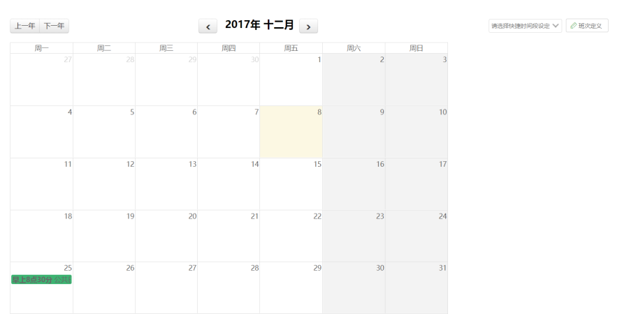
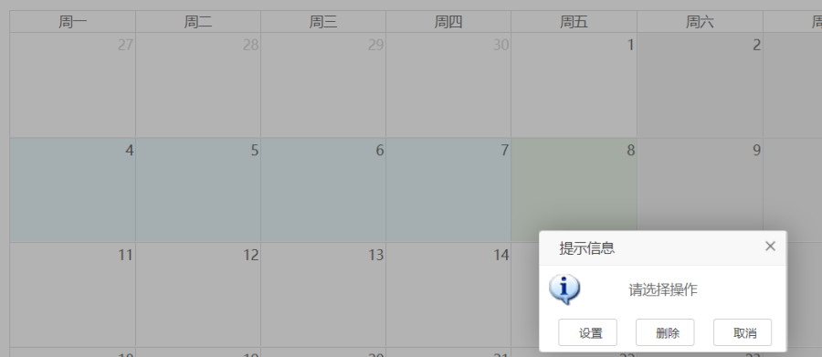
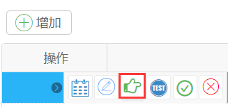
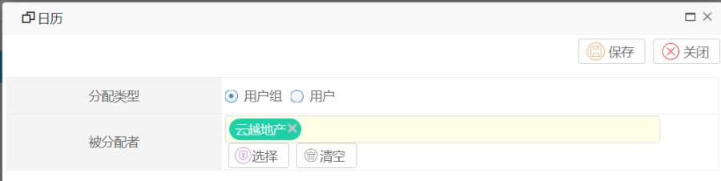
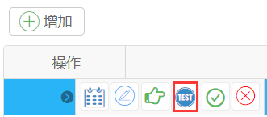
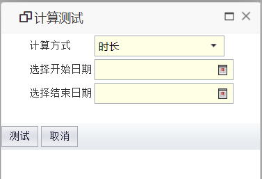

功能说明
在请假时，比如从周五到下周一请假，那么我们通过在表单中计算这段请假的时长，如果直接根据时间计算，那么是4天，这样是不合理的因为没有排除调假期。工作日历就是做工作时间计算的。
在平台中工作日历的作用有两个：
1.根据一个用户获取在一个开始和结束时间点，实际的工作时间。
2.根据一个用户，一个时间点，工作日和工作日历计算出完成时间点。
操作步骤
1.添加日历
系统配置->系统管理->工作日历

2.日历设定
选择一个日历，点击设定。


如果没有班次定义的话，可以先定义班次，班次的意思指的是工作的时间段，比如一般公司是9-12点，下午2-6点。
班次可以跨天，比如从23到凌晨5点。
定义完班次后，我们就可以对日历进行设定了
1.选择一个班次，点击日历进行拖动，拖动结束后，会弹出一个设置框。

1.点击设置那么选择的日历都会按照选中的班次设置。
2.点击删除会将选择日历内设置的班次删除。
我们可以一次性设置未来一年的日历数据。
2.日历分配
定义完日历后，我们可以将日历进行分配，比如将日历设置到部门或者个人。
我们在使用日历做计算的时候会按照下面的顺序查找日历：
1.先根据用户查询看有没有分配日历。
2.如果没有则查询他部门有没有日历。
3.如果还没有就查询租户默认的日历，一般的公司需要设置一个日历。

点击分配按钮。

3.测试日历
设置完日历，分配日历后，我们可以测试日历是否配置正确。

点击测试。

测试时，可以选择计算方式
1.时长，取开始和结束时间，根据日历设定，计算出工作时间。
2.时间点，取开始时间，时长，日历设定，计算出时间点。